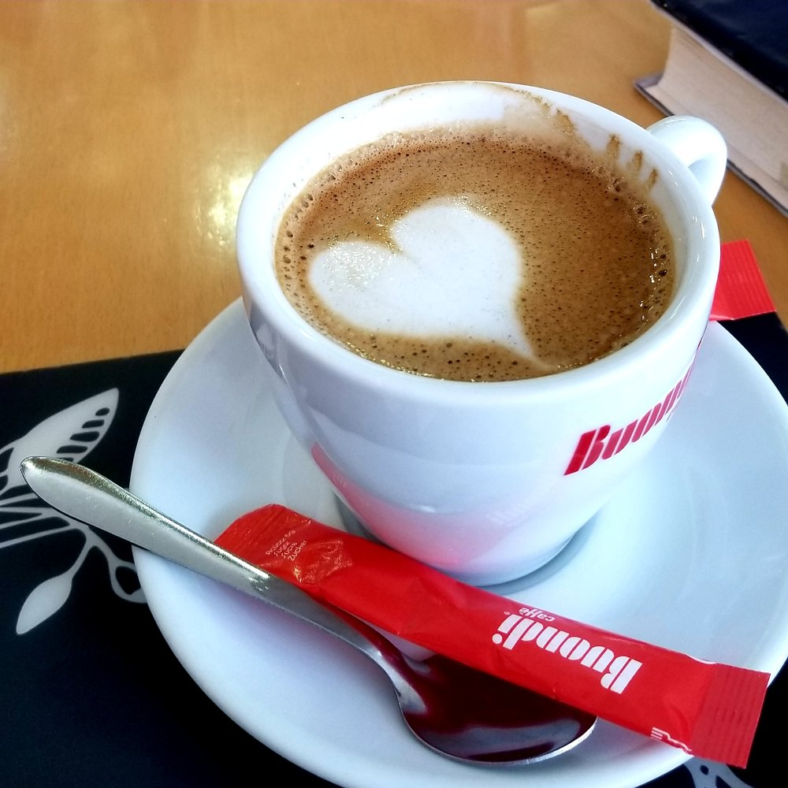
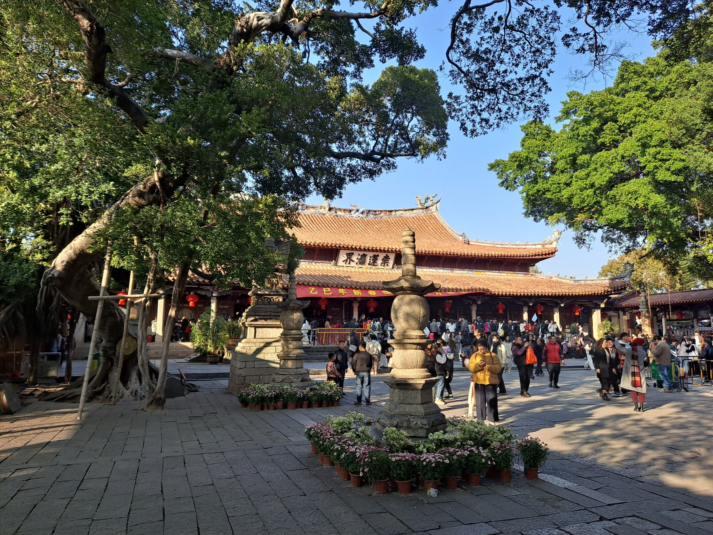
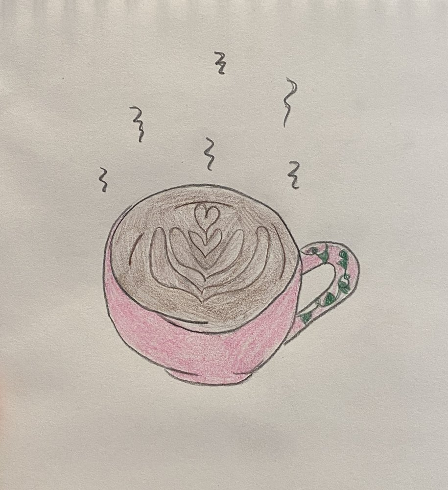
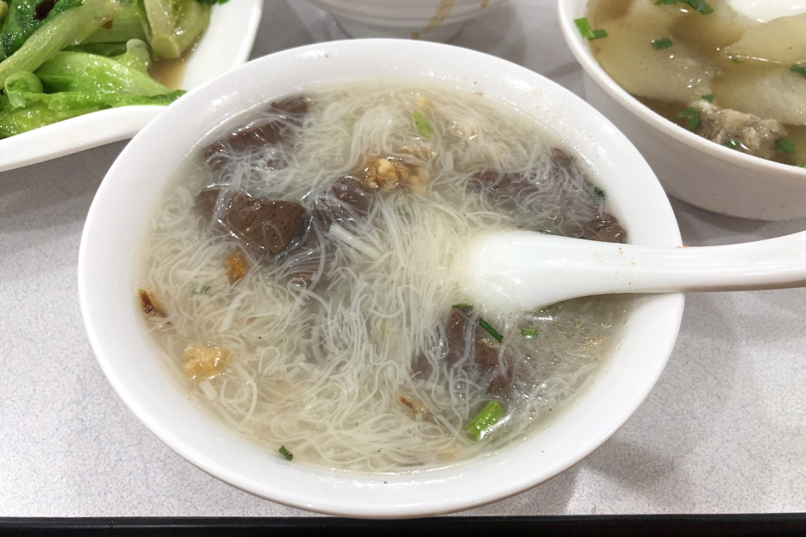

DAY 01 / 10月2日抵达与烟火气入住 · 姜母鸭 · 城南短散步DAY 02 / 10月3日海边留白黄金海岸 · 洛伽寺 · 坐着看海DAY 03 / 10月4日古城与午睡开元寺 · 西街 · 钟楼 · 承天寺DAY 04 / 10月5日从容返程附近走走 · 取行李 · 13:00出发
10月2日 · ARRIVAL
到泉州，先慢下来
入住 · 姜母鸭 · 城南短散步
路线：泉州南站→酒店→涂门街斯丹→关岳庙外观／中山路短走→酒店。
- 15:00—15:30
到站、出站、叫车
按本人订单地址设置住宿目的地，核对分店后再叫车。
- 15:30—17:00
去酒店、入住
这是交通＋入住窗口，不是预计开车90分钟。
- 17:00—18:00
酒店休息
入住时问清10月5日退房寄存、取件方式和早餐。
- 18:00—18:40
去涂门街外围，步行到斯丹
让司机按当日交通管理选下车处。
- 18:40—19:40
姜母鸭晚餐
斯丹涂门街100号：先问半只／整只与套餐份量，配青菜、米饭。
- 19:40—20:30
关岳庙外观、城南街道短散步
不假设晚间可以进入文庙、清净寺或天后宫。
- 20:30—21:10
外围打车回酒店
若晚餐等位超过30分钟，换同片区普通闽南餐厅；入住晚则取消散步。
10月3日 · SEASIDE
把一整天，留给海
黄金海岸 · 洛伽寺 · 坐着看海
黄金海岸⌁洛伽寺同一片区 · 留白一整个下午
路线示意，非实景照片
路线示意，非实景照片
路线：酒店→黄金海岸午餐→洛伽寺→海岸散步与休息→酒店。景点都在同一海边片区，不加入永宁、祥芝或第二个海滩。
午餐备用：雅贺临时关门或等位超过30分钟，则在黄金海岸同片区选择有室内座位、菜单清楚的小店，吃面或家常菜，不为另一家店再打车跨区。晚餐和咖啡也是有意保留的现场选择，并非漏掉预约。
若当天雷电、大风、强降雨或海岸管控，取消海边。可先在市区休息，等待天气窗口；不要因已到泉州就强行完成看海。若两天预报整体互换，10月3、4日按整天组别交换；已买演出票时优先保留票的时间。
- 08:30—09:30
早餐、准备出门
带水、折叠伞、防晒；出发前看石狮当天降雨、雷电和沿海风况。
- 09:30—11:30
打车去黄金海岸片区
预留约2小时覆盖候车、国庆拥堵与外围步行；这不是新起点实测车程。餐厅与寺不同落点，司机确认当日入口。
- 11:30—12:30
雅贺午餐
中骏黄金海岸欢乐海洋3幢106G；家常菜＋汤＋主食。地图人均67元是平台参考，非现价套餐承诺；两人先按150—200元餐费额度选菜。
- 12:30—13:00
步行／按现场短接驳前往洛伽寺
预留30分钟作为机动窗口，未把餐厅到寺步行分钟数说成地图验证结果。
- 13:00—14:00
看寺与海、拍照
如部分殿堂不开，保留允许通行的桥与岸上视角；不在礁石上等潮。
- 14:00—15:30
黄金海岸慢走，选可坐下的店休息
咖啡店按现场营业、价格与座位选，不追指定网红机位。
- 15:30—16:30
再散步或继续坐着看海
累了提前回，不为了凑时间继续走。
- 16:30—18:30
叫车返市区
16:00先看车源，16:30计划离开，避免等日落后才开始找车。
- 18:30—19:30
湖心街／丰泽广场就近晚餐
普通家常菜或沙茶面，按现场门店选择；这顿优先方便，不包装成已核验的名店。
10月4日 · OLD TOWN
走进古城，也留一场午睡
开元寺 · 西街 · 钟楼 · 承天寺

路线：酒店→开元寺西门片区→西街向东→钟楼→午餐→酒店午休→承天寺、南俊路→湖心街阿秋→酒店。
10月4日的降雨应对：小雨可带伞缩短西街，保留寺院与午休；雷雨时留在室内，暂停寺院院落和街巷步行。不要把寺院说成完全室内景点。
- 08:00—08:50
酒店早餐
按本人安排解决早餐，不为早餐先到西街东端再折返开元寺。
- 08:50—09:30
去开元寺西门附近可停靠处
新华北路外围优先，具体下车点服从当天管理。
- 09:30—11:00
开元寺
看东西塔、院落；近期资料免费免预约，无需先买寺院入场票。特殊调整仍以现场为准。
- 11:00—12:00
西街向东慢逛→钟楼
小吃选醋肉、麻糍等一两种，两人分着吃；天台不设必去。
- 12:00—13:00
西街口午餐
首选曾氏老记西街17号：面线糊＋油条；想吃肉粽则改侯阿婆东街59号。两家二选一，不安排连续两顿。
- 13:00—13:40
回酒店
到古城外围打车。
- 13:40—15:20
酒店午休
午休到15:20，为承天寺留出余量。
- 15:20—15:50
去承天寺
地址南俊路36号。
- 15:50—16:50
承天寺、南俊路
平台常态开放到17:30，提前留出离寺时间。临时不开则在街巷歇脚或返回酒店。
- 16:50—17:20
前往湖心街
阿秋选择湖心街店；前往方式按当前位置选步行或打车。
- 17:20—18:20
阿秋牛排晚餐
湖心街500号；炖牛排、牛肉羹、咸饭、青菜按两人食量点。
- 18:20—19:00
回酒店
无演出票，至此结束；不强加夜场。
10月5日 · HOMEBOUND
吃好早午餐，从容返程
附近走走 · 取行李 · 13:00出发
- 09:00—10:00
早餐、收拾、退房寄存
退房、寄存和取行李方式提前与前台确认。
- 10:00—11:00
东湖短散步／一家社区咖啡
首看浅院咖啡或东湖公园的一嘉咖啡是否已开门；只选一家，坐30—40分钟。不开门就散步，不等到午后。
- 11:00—12:00
湖心街／美食街早午餐
想换口味选水门国仔美食街店，面线糊＋油条；想省移动选阿秋湖心街店（平台常态11:30开门），只有不排队才坐下吃，11:50前结束。
- 12:00—12:30
回店取行李、洗手间
12:00回店取行李、洗手间。不要为咖啡、补吃或伴手礼压缩返程缓冲。
- 12:30—13:00
看导航、叫车
导航超过90分钟或车难叫，立即出发。
- 13:00
酒店出发去泉州南站进站口
按当日导航判断路况，仍保留国庆缓冲，必要时提前出发。
- 14:30—15:00前
到站目标窗口
早到就候车；不是让司机开满90分钟。
- 16:00
高铁返上海
按铁路实时检票信息执行。
最后半天，喝一杯再走。
2家咖啡＋2家早午餐候选 · 选一杯、一餐就够
以湖心街—东湖—丰泽片区为主，不为了“小众”特意跨区。这里的小众方向指社区咖啡与公园咖啡，不代表国庆人少。咖啡上午营业未确认，10:00不开门就散步；午餐11:50前结束，12:00回去取行李，13:00照常出发。


顺路吃，轻松选。
主线餐厅与地图搜索入口 · 所有餐厅均未订位
斯丹姜母鸭 · 涂门街总店
涂门街100号
先问半只／整只份量，配青菜、米饭。
地图搜地点 ↗雅贺 · 黄金海岸
黄金海岸欢乐海洋3幢106G
家常菜＋汤＋主食；两人先按150—200元额度点菜。
地图搜地点 ↗曾氏老记 · 西街店
西街17号
面线糊＋油条，午餐轻一点。
地图搜地点 ↗侯阿婆 · 东街备用
东街59号
想吃肉粽时替换面线糊，两家二选一。
地图搜地点 ↗阿秋牛排 · 湖心街店
湖心街500号
炖牛排、牛肉羹、咸饭，按两人食量点。
地图搜地点 ↗泉州南站 · 进站口
返程目的地请选泉州南站
10月5日13:00离店，目标14:30—15:00前到站。
地图搜地点 ↗地图入口按店名＋地址搜索，请在地图中核对分店后再导航；不是已经锁定坐标的导航路线。
等位超过30分钟，换同片区小店。平台常态营业信息不代表国庆逐日营业承诺。
多留几家，按片区替换。
备选不叠加到主行程 · 排队超过30分钟再换
出发前，看这几件事。
计划有缓冲，临场有退路。
天气留一个开关
9月30日预报快照：10月3日多云24—29℃，10月4日雷阵雨转小雨23—31℃。临行重看预报，必要时整组交换古城／看海日；雷电、大风或海岸管控时取消海边。
查看最新泉州预报 ↗古城外围下车
2026年10月1—7日10:00—23:00部分道路限行，部分中山路禁车。外围上下车，内部步行。开元寺西门附近能否停靠，听从当天交通管理；到寺院不等于全程室内。
木偶戏，有票再加
可选10月4日19:30经典折子戏。场次已有公告，余票、现价、时长未确认，未购票。买到票后，晚餐后直接去剧院，目标19:00前到场；无票就回酒店休息。
官方购票说明 ↗¥1,600—2,500
两人准备金额度建议，不含酒店、高铁。
餐饮饮品800—1200 · 市区与南站打车400—600 · 海边往返300—500 · 小额体验100—200。
这是估算，车费以下单时为准；木偶戏、摄影、购物另计。
交通预留窗口
住宿起点已按本人新订单调整，旧版地图公里数与精确车程不再使用。以下为执行建议，未完成新起点的独立路线测算。
| 路段 | 规划窗口 | 使用方式 |
| 市区 → 黄金海岸 | 09:30—11:30 | 覆盖候车、假日拥堵与外围步行，实际车程看当天导航。 |
| 黄金海岸 → 市区 | 16:30—18:30 | 16:00先看车源；累了可提前返程。 |
| 市区 → 开元寺西门片区 | 08:50—09:30 | 预留交通与限行外围步行，不保证门口下车。 |
| 市区 → 泉州南站进站口 | 13:00出发 | 目标14:30—15:00前到站；叫车难或导航超过90分钟，立即提前出发。 |
木偶戏可选安排与购票边界
木偶戏：有今年场次，余票尚不能确认
可选10月4日19:30泉州木偶剧院经典折子戏专场。今年场次已有公告；不能据此推定还有两张相邻座位，也不能沿用去年的票价或放票规则。
官方官网在线购票页指向“泉州市提线木偶戏传承保护中心”微信公众号菜单的小程序；另外查到2025年12月售票系统变更公告，因此应从公众号当前菜单进入，避免凭旧攻略名称找错入口。官方购票说明 ↗
若买到票：保留17:20—18:20阿秋晚餐，18:20直接打车去剧院，目标19:00前到场，19:30开演；散场后回酒店。前往剧院这段预留约40分钟，未取得本轮独立路线测算。节目结束时间依票面，不能把未核验的60分钟当正式时长。地址与入口在购票成功后以票面核对。
当前无法用已连接的网页浏览器读取微信小程序实时库存；因此本版没有购票、占座或订票。主线不依赖木偶戏；想看再核实余票和总价后决定。
餐厅常态营业记录与预算说明
餐厅营业核对与预算
| 店铺 | 地址、常态营业记录 | 来源与使用范围 |
| 斯丹涂门街总店 | 涂门街100号；Trip.com标注10:30—20:30，高德本轮详情列10:30—21:00，电话0595-22373358 | 餐厅页面 ↗与高德存在半小时差异，按较早关门口径规划；18:40用餐不压关门时间。 |
| 阿秋湖心街店 | 湖心街500号；Trip.com标注11:30—20:30 | 餐厅页面 ↗；17:20晚餐处于常态窗口。 |
| 曾氏老记西街店 | 西街17号；平台标注06:00—23:00 | 餐厅页面 ↗；午餐时段可安排。 |
| 侯阿婆东街／钟楼店 | 东街59号；平台记录08:30—21:30，与旧资料有出入 | 店铺资料 ↗；只作午餐备用，不依赖早晚临界时间。 |
| 雅贺黄金海岸门店 | 欢乐海洋3幢106G；高德详情标注11:00—22:00，电话15260304912 | 本轮高德实际查看；只能确认当前页面的资料，未电话确认10月3日。 |
所有餐厅均未订位。公开平台未提供本次国庆逐日营业承诺；临时售罄、排队和营业调整仍会发生，因此每顿都留了同片区替代方式。没有把“地图标注营业”说成“已向商家确认”。
两人不含酒店、高铁的预算额度：餐饮饮品800—1200元，市区与南站往返打车预留400—600元，海边往返另留300—500元，门票与小额体验留100—200元；合计约1600—2500元。是准备金建议，不是核验后的报价；木偶戏、摄影、购物另计，打车价格以下单时为准。
把依据，留在这里。
内容更新：2026年9月30日 · 咖啡、备选餐馆已补充
景点与交通的核对记录与资料链接
核对结果
| 项目 | 查到什么 | 最终处理 |
| 开元寺 | 近期本地宝注明免费、免预约；携程列06:30—17:40，17:00停止入场 | 09:30入寺，避开关门边界。查到的是近期常态口径，未找到独立的2026国庆特殊开放公告。 |
| 承天寺 | 携程标注08:00—17:30，地址南俊路36号 | 原16:15到寺改为15:50左右，16:50离开；如现场暂停开放改南俊路街巷短逛。 |
| 洛伽寺 | 地图位置为石狮永宁镇黄金海岸943号；携程标注全年全天开放 | 白天游览；平台“全天”不推导所有殿堂24小时开放。桥、寺院入口、沿岸区域听从现场管理。 |
| 古城交通 | 今年官方公告：10月1—7日10:00—23:00部分道路限行，部分中山路禁止车辆通行 | 外围上下车，内部步行。开元寺优先询问新华北路西门附近当日可停靠点，不能保证门口下车。 |
| 海边餐厅 | 高德查到雅贺泉州姜母鸭，欢乐海洋3幢106G，标注11:00—22:00，电话15260304912 | 海边午餐有明确候选；首晚已吃鸭，海边选家常菜和汤，不必重复点鸭。此店为新增执行候选，不属于原小红书TOP50独立验证的口味结论。 |
| 木偶戏 | 9月16日泉州晚报发布10月1—6日每天10:30、12:00、13:30、15:00、16:30、18:00、19:30、21:00的经典折子戏专场 | 优先考虑10月4日19:30；场次已公告，余票、现价、演出时长未在小程序确认，未订票，不进入固定行程。 |
| 海交馆 | 存在历史与今年临时闭馆公告，未找到足够明确的本次国庆恢复开放信息 | 从本版删除，不将“可能开馆”作为雨天行程依赖。 |
来源：、开元寺近期免预约资料 ↗、开元寺开放时段 ↗、承天寺 ↗、洛伽寺 ↗、2026古城交通公告 ↗、2026戏剧周场次公告 ↗。海边餐厅详情来自9月30日实际打开的高德地图 ↗页面，不是电话确认。
小红书资料的使用范围
2026年9月30日，六组关键词采集274条记录，去重236条、筛选224条；按检索可见点赞数选出本次检索样本TOP50，并补充14篇笔记。读取64篇正文与互动信息，查看部分图片，未完整观看所有视频。
这不是全站榜单或官方榜单。笔记用于体验与避坑线索；地址、时段结合公开资料与当次地图核对。商业笔记和主观体验不视为独立客观证明。本站没有使用小红书作者图片。
图片作者、来源与许可
封面：Xi Jie (West Street), Quanzhou Aug 2023，HMGiovanniV，2023年8月9日拍摄，CC BY-SA 4.0。本站版本缩小、JPEG压缩，并为版面裁切；衍生图片保持同许可。该许可不自动适用于全站文字。
开元寺：Kaiyuan Temple, Quanzhou 7，H2v5o68z，2025年2月9日拍摄，CC0 1.0。本站版本缩小、JPEG压缩并裁切。
两张照片均为历史实景，不代表2026年国庆现场与人流。海边区域为行程示意，非洛伽寺实景。
Latte art heart Garden Caffé Portugal 20190118.jpg ↗，作者Londonjackbooks，CC0 1.0。已缩小、JPEG压缩，为版面裁切；面线糊衍生图片保持CC BY-SA 4.0。咖啡照片为品类配图，面线糊为2020年泉州历史实拍，均非所推荐店铺实拍。
Cute Latte.jpg ↗，作者Emilystark101，CC0 1.0。已缩小、JPEG压缩，为版面裁切；面线糊衍生图片保持CC BY-SA 4.0。咖啡照片为品类配图，面线糊为2020年泉州历史实拍，均非所推荐店铺实拍。
Mī-suànn-kôo in Quanzhou (20200929220207).jpg ↗，作者N509FZ，CC BY-SA 4.0。已缩小、JPEG压缩，为版面裁切；面线糊衍生图片保持CC BY-SA 4.0。咖啡照片为品类配图，面线糊为2020年泉州历史实拍，均非所推荐店铺实拍。
新增咖啡与餐馆的资料范围
浅院地址采用高德当前门店详情（湖心街268号），推荐榜单仍写270号，存在门牌差异，请以门店导航确认；一嘉所在地依据泉州晚报2025年9月26日报道（东湖公园内），两店国庆上午营业尚未确认；水门国仔美食街店地址依据泉州政府美食网站；好成财与蓝氏依据高德门店页，东兴依据文旅中国2023年报道。口味与选择建议属于规划判断，不代表本次到店体验或商家国庆营业承诺。
上述卡片的“资料依据”可直接查看来源。图片不用于证明店内环境或具体菜品。